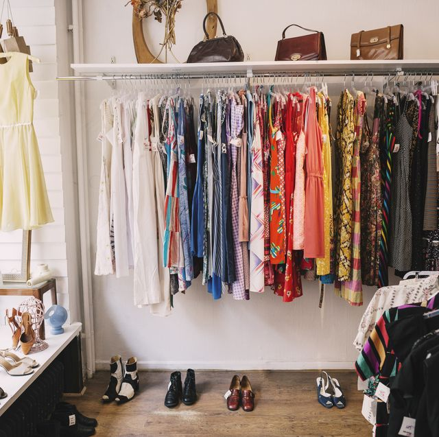

|
Why Vintage?Most modern clothing is not made with durability in mind due to the fleeting nature of trends. Vintage clothing tends to be more durable because it was made in decades where longevity of garments was more important than changing your look from month to month. |
Why Pandora Thrift?The right fit is the most important part of choosing good clothes. In general, a garment that fits well but is in an unflattering style will look better than a piece with a poor fit in a style meant to flatter your body shape. Quality clothes which are worth the investment are always available in Pandora Thrift. |
 |